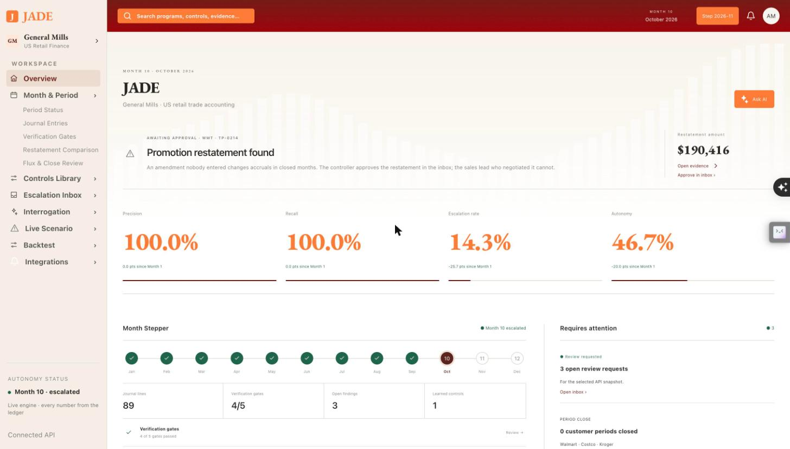
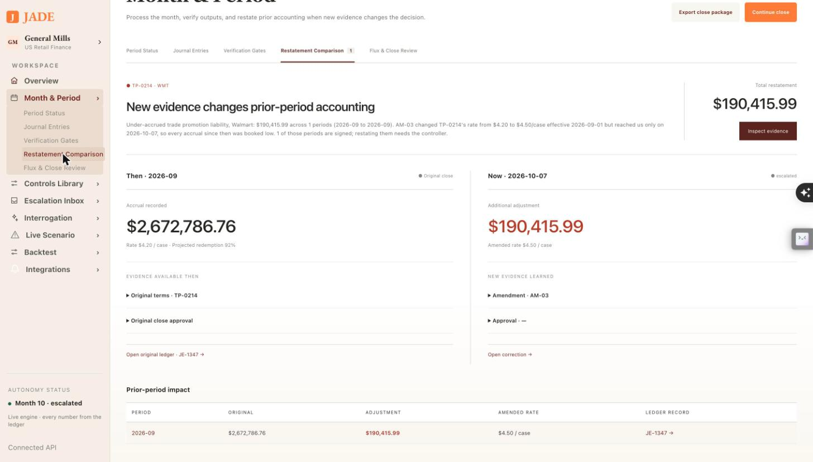
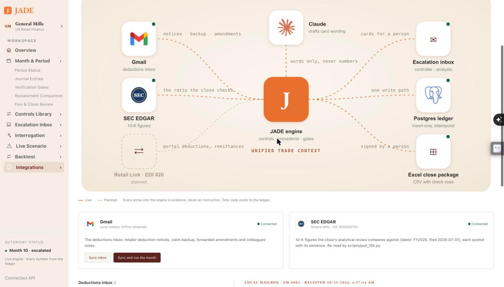
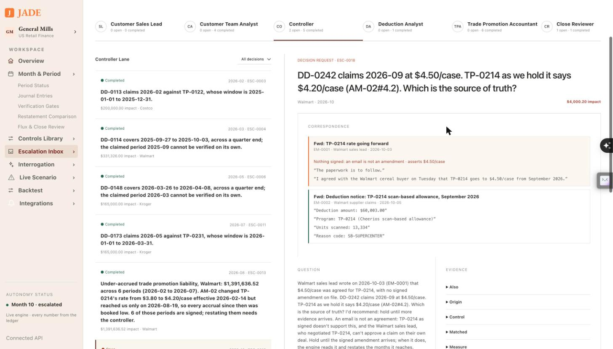
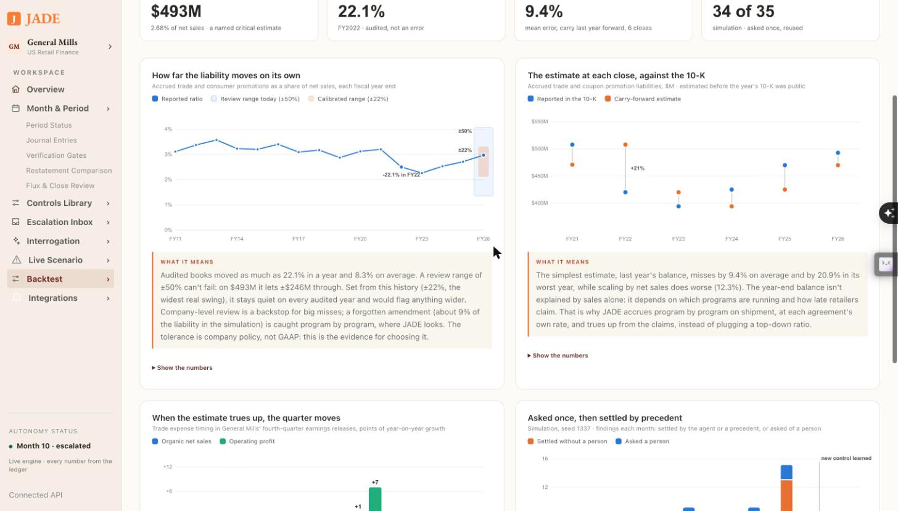
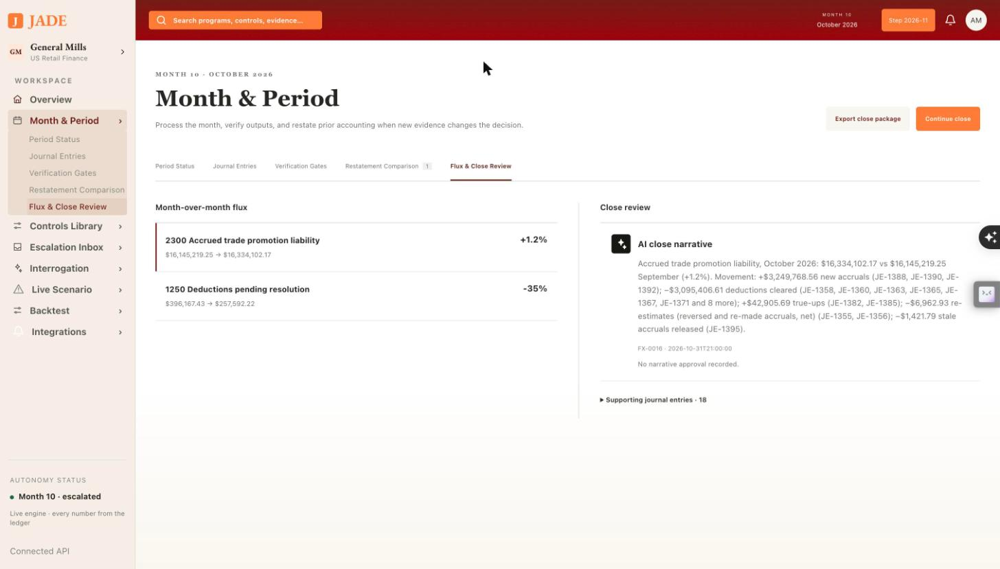

Plan: JADE demo, transcript and close exports
Explain the problem in General Mills' own numbers, walk the real UI with a word-for-word script, and end on what a controller takes away: a flux PDF, an Excel workbook that checks itself, and a QuickBooks journal import.
Purpose
The product works; the pitch has to make a finance judge feel the problem in the first thirty seconds and leave with something they could use on Monday. This plan does three things:
- Explains the problem with sourced numbers, not adjectives.
- Scripts the demo beat by beat on the real UI (screenshots below are from the running app), so any teammate can give it.
- Builds the ending: the close package leaves JADE as a flux PDF report, an Excel workbook with live check formulas, and a QuickBooks journal-entry import, each on an export menu with its logo.
Problem
Trade promotion is the second-largest line on a food company's income statement after the cost of goods, and the most estimated. General Mills promises Walmart, Costco and Kroger money for selling its cereal: a scan-back on every unit sold, a fee for an end-cap, an allowance off every case. It books what it owes the day the truck leaves, as a reduction of revenue (ASC 606). The retailer collects months later by deducting from a payment, often at a different rate, citing a program from two quarters ago, with backup that doesn't tie. Two people (the trade promotion accountant and the deduction analyst) decide what was owed, what to dispute, and what the accrual should have been all along.
The failure that matters is not a bad claim; it is a good document nobody entered. In the simulation, Walmart and General Mills sign an amendment in February (TP-0214, $3.80 → $4.20 a case). It is filed and forgotten; six months close short. When it surfaces, someone must re-price closed months, explain the catch-up, and stop the sales lead who negotiated it from approving it. Real books show the same mechanism in public: General Mills told investors that trade expense timing cost 3 points of Q4 sales growth in FY2024 and added 7 points of Q4 profit growth in FY2026.
Solution
JADE, the Deterministic JADE Engine, takes both seats. It accrues on shipment, matches each deduction to its program, clears what the agreement supports, disputes what it doesn't, restates closed months when terms change, and packages the close for a person to sign. Every number is computed by code into an insert-only ledger; a model only drafts sentences. It asks a person only when the agreement can't settle the question, and reuses the answer.
The demo ends where a controller's month ends: the signed close leaves the system in the formats finance already uses.
SUM totals and CHECK cells that must read 0. The existing CSV check rows, as one file.Demo transcript
About three and a half minutes, on the live API (scripts/demo_preview.sh, Phase 1) or mock mode. Bold text in brackets is what to click. Numbers are the seed-1337 run and the cited filings; say them as written.
[Overview, month 10. Don't click yet.]
Every box of Cheerios on a Walmart shelf was sold on a promise: a scan-back for every unit, paid months later as a deduction from Walmart's payment. General Mills carries 493 million dollars of those promises on its balance sheet and calls the estimate critical in its 10-K. Two people a month decide what was owed. JADE does that job, and asks them only when the contract can't answer.

[Month & Period → Restatement Comparison.]
In February Walmart signed an amendment raising TP-0214 from $3.80 to $4.20 a case. Nobody entered it; six months closed short. In August the document reached the books, and JADE found the gap on its own: $1,391,636.52 across February to July. Here is September after a second amendment: then, the accrual as it was booked; now, the catch-up, with nothing overwritten. Correct then and correct now are the same query at two times.

[Integrations. Point at the Gmail tile, then the inbox list.]
Most of what decides a deduction never reaches the ledger. It arrives by email. JADE reads the deductions inbox the way it reads contracts: by code, every field quoted from its sentence. A deduction notice becomes a deduction. A signed amendment becomes terms. Anything else is evidence, never an instruction.

[Escalation Inbox → Controller → ESC-0018.]
The Walmart sales lead wrote: four-fifty a case, paperwork to follow, please clear their claim at that rate. Then Walmart claimed September at four-fifty. Without that email, last year's precedent would dispute the difference and nobody senior would see it. With it, the controller gets the card, the email quoted, and JADE recommends holding. An email is not an amendment. [Answer as: Walmart sales lead → “Customer's claimed rate” → Submit. The refusal appears.] And the person who negotiated the deal can't approve its claim: that's a refusal in code, not a prompt.

[Backtest. Hover FY22 on the first chart.]
Deduction data is never public, so we tested what is: sixteen years of General Mills' trade liability, walked forward so no close sees its own 10-K. Audited books swung 22 percent in a year. The usual plus-or-minus-50 review can't fail; we calibrate it on the real history. And the best top-down estimate still misses by 9 percent, which is why JADE accrues program by program instead.

[Month & Period → Flux & Close Review.]
The close explains itself. Accrued trade promotion moved 1.2 percent in October, and every dollar of that sentence is a sum of named journal lines you can click. So far this year, thirty-four of thirty-five repeat situations settled by an answer someone gave once.

[Export ▾ → Flux report (PDF), then Excel, then QuickBooks. Open the PDF.]
And it leaves the way a controller's month leaves: a flux report for the binder, a workbook whose check cells read zero, and a journal import for QuickBooks. JADE keeps the subledger; your general ledger gets the posting, signed by a person.
[Stop.]
Deterministic where money moves, a person where judgment is needed, and every number traceable to the line that made it. That's JADE.
Relevant Files
Existing Files
- existing
tpa/package.py— the sign-off package (postings, balances, findings with answers, gates as of, flux, analytical review, reconciliation). Every export reads it; nothing recomputes. - existing
tpa/export.py— today's CSVs with TOTAL/CHECK formula rows and formula-injection escaping; the Excel and QuickBooks writers reuse its row builders andparse_as_of. - existing
tpa/flux.py— flux narratives templated from journal-line sums; the PDF prints them with their driver entry ids. - existing
tpa/review.py— the analytical review against the latest 10-K; a boxed section of the PDF. - existing
tpa/api.py—GET /api/period/{p}/export/{file}; new files are added to the same route. - existing
tpa/constants.py—Accountcodes the QuickBooks mapping keys on (4100 is contra-revenue, never expense). - existing
frontend/src/PeriodPage.tsx— the "Export close package" button becomes the export menu. - existing
frontend/src/api/{types,client,mock}.ts—exportUrlandExportFilegain the new formats; mock mode serves captured files. - existing
frontend/public/brand/— logos and CREDITS.md; QuickBooks joins them. - existing
scripts/demo.sh,scripts/demo_mail.py,scripts/step.py— the demo state is built from these. - existing
docs/presenting.md,README.md— where the transcript and the export story land.
New Files
- new
scripts/demo_preview.sh— one command to the demo state: seed, play January–September, land the side letter, claim and amendment by email, run October, start API and UI. - new
tpa/report_pdf.py— the flux and close report as a PDF (reportlab), from the package. - new
tpa/export_xlsx.py— the close workbook (openpyxl): one sheet per CSV plus Flux and Read me, live formulas, CHECK cells formatted pass/fail. - new
tpa/export_quickbooks.py— summarized journal entries as a QuickBooks Online import CSV and a QuickBooks Desktop IIF file. - new
config/quickbooks_accounts.csv— JADE account → QuickBooks account name and type; the company edits this, not the code. - new
tests/test_exports.py— the three formats tie to the package to the cent; CHECK formulas evaluate to 0; QuickBooks entries balance per journal. - new
frontend/src/ExportMenu.tsx,ExportMenu.css— the menu with logos: PDF, Excel, QuickBooks, CSV. - new
frontend/public/brand/quickbooks.svg,sheet.svg,pdf.svg— QuickBooks from Simple Icons (CC0); neutral marks for the sheet and PDF (Microsoft and Adobe marks are not used). - new
docs/demo-transcript.md— the transcript above, as plain text for rehearsal.
Implementation Phases
IMPORTANT: Execute every phase and task step by step, in order, top to bottom.
Status markers: [] idle · [wip] in progress · [x] complete · [f] failed. All start as []; the Build Plan workflow updates them as it works.
[] Phase 1: One command to the demo state
The transcript assumes October with three emails landed and two cards open for the controller. Today that takes five commands typed in order; a demo needs one, and it must never touch the demo database by accident.
1. scripts/demo_preview.sh
[]Take the target database fromDEMO_DATABASE_URL(defaultTEST_DATABASE_URL); refuse to run againstDATABASE_URLunless--yes-reset-demois passed.[]Runscripts/step.py --reset --through month-9 --players, thendemo_mail.py run side-letter --no-stepanddemo_mail.py run amendmentwithJADE_MAIL_BACKEND=localand a freshJADE_MAIL_DIR.[]Startuvicorn tpa.api:app --port 8011withTPA_HUMANS=inboxand Vite in http mode on 5183; print the URL and the stop command.[]--gmailswitches the mail step to the Gmail backend (needsgws auth login -s gmail); otherwise local, so the rehearsal never depends on the network.
2. Testing Strategy
Run the script against the scratch database and check the state the transcript names, through the API.
[]scripts/demo_preview.sh && curl -sf localhost:8011/api/clock— the clock reads 2026-11 (October has run).[]curl -sf localhost:8011/api/escalations | jq '[.[] | select(.to_role=="controller")] | length'— 2 open controller cards (ESC-0018 hold, ESC-0019 restatement).[]DATABASE_URL=… scripts/demo_preview.shwithout the flag — refuses and exits non-zero.
[] Phase 2: The flux report as a PDF
The document a controller attaches to the close binder. It prints what the package already holds; it computes nothing.
1. Content, in this order
[]Header: JADE mark, "Close package · General Mills (simulation) · {period}", as-of time, period state, signed by and when (or "unsigned").[]Flux: per account over materiality, opening → closing, change %, the narrative, and its driver journal ids in a small mono line.[]Analytical review box: liability / annualized net sales, the 10-K expectation and range, inside or outside, and the 10-K citation.[]Restatements: then and now per period (original accrual, catch-up, amended rate, journal ids).[]Decisions: each finding with its card, answer, who answered, precedent id; segregation-of-duties refusals listed as refusals.[]Reconciliation identity per program and the five gates, pass/fail. Footer on every page: "Every amount is a sum of named journal lines. Prepared by JADE; approved by {signer}."
2. Build
[]uv add reportlab;tpa/report_pdf.pywithrender(pkg: dict) -> bytes, using Platypus tables, the parchment/oxblood/orange palette, Decimal formatted withf"{x:,.2f}"(never floats).[]Route:GET /api/period/{p}/export/flux_report.pdf?as_of=withapplication/pdfand a dated filename.
def render(pkg: dict) -> bytes:
doc = SimpleDocTemplate(buf, pagesize=letter, title=f"JADE close {pkg['period']}")
story = [header(pkg), *flux_tables(pkg["flux"]), review_box(pkg.get("analytical_review")),
*restatements(pkg), decisions(pkg), reconciliation(pkg), gates(pkg)]
doc.build(story, onFirstPage=footer, onLaterPages=footer)
return buf.getvalue()3. Testing Strategy
pytest against a played October; text extracted from the PDF must carry the package's numbers exactly.
[]uv run pytest tests/test_exports.py -k pdf— the PDF opens, has the period, every flux amount and driver id, and the restatement $190,415.99.[]curl -sf localhost:8011/api/period/2026-10/export/flux_report.pdf -o /tmp/flux.pdf && file /tmp/flux.pdf— "PDF document".[]An unsigned period prints "unsigned" in the header and the footer; a period with no flux prints "No account moved past materiality".
[] Phase 3: The Excel workbook
The four CSVs as one workbook a reviewer opens and trusts: totals and checks are live formulas Excel recomputes, beside the computed values.
1. Build
[]uv add openpyxl;tpa/export_xlsx.pywith sheets Read me, Flux, Ledger, Trial balance, Reconciliation, Gates.[]Reusetpa/export.py's row builders; write amounts as numbers with#,##0.00, ids and memos as text (formula injection stays escaped).[]TOTAL rows as=SUM(); CHECK cells (=debits−credits,=ending−(opening+accruals+adjustments−settled)) with conditional formatting green at 0, red otherwise.[]Freeze the header row, autosize columns, a header band with the JADE mark and the period; routeexport/close_package.xlsx.
2. Testing Strategy
Tie every sheet to the package, and evaluate the CHECK formulas without Excel.
[]uv run pytest tests/test_exports.py -k xlsx— each sheet's row count and totals equal the package; every CHECK cell's formula, evaluated from the sheet's own values, is 0.[]A memo starting with=is stored as text, not a formula.[]Open in Excel and Numbers once by hand; CHECK cells are green.
[] Phase 4: The QuickBooks journal import
JADE is the trade promotion subledger; the general ledger receives one summarized entry per journal type and customer for the period. The company imports the file in QuickBooks; nothing posts without a person.
1. Account mapping
[]config/quickbooks_accounts.csv:jade_account, qb_account_name, qb_account_type. Defaults: 1200 → Accounts Receivable (A/R); 1250 → Deductions Pending (Other Current Asset); 1260 → Disputed Deductions (Other Current Asset); 2300 → Accrued Trade Promotions (Other Current Liability); 4000 → Sales (Income); 4100 → Trade Promotion Allowances (Income, contra); 6900 → Deduction Write-offs (Expense).[]Refuse to export if any posted account has no mapping, naming the account. 4100 must map to an income-type account (rule 1: contra-revenue, never expense); refuse otherwise.
2. Files
[]quickbooks_online.csv: one row per line with Journal No., Journal Date, Account, Debits, Credits, Description, Name. Journal No.JADE-{period}-{entry_type}-{customer}; Description lists the JADE journal ids; Name is the customer on every A/R line (QuickBooks requires it).[]quickbooks_desktop.iif: TRNS/SPL/ENDTRNS blocks, GENERAL JOURNAL type, the same journals.[]Routesexport/quickbooks_online.csvandexport/quickbooks_desktop.iif; only for a SIGNED period (409 otherwise: an unsigned close doesn't go to the general ledger).
3. Testing Strategy
Balance and tie-out, then one real import into a QuickBooks Online sandbox company before the demo.
[]uv run pytest tests/test_exports.py -k quickbooks— each journal's debits equal credits; the sum per account equals the trial balance movement for the period.[]An unmapped account and a 4100 mapped to Expense are both refused with the account named.[]curl -s -o /dev/null -w "%{http_code}" localhost:8011/api/period/2026-10/export/quickbooks_online.csv— 409 while October is unsigned, 200 after signing.[]Import the CSV into a QuickBooks Online sandbox (Settings → Import data → Journal entries); the journals appear balanced. Screenshot it for the deck.
[] Phase 5: The export menu, with logos
The last click of the demo. The "Export close package" button becomes a menu in the style of the Integrations tiles: a logo, a name, one line on what the file is.
1. Build
[]ExportMenu.tsx: Flux report (PDF), Close workbook (Excel), QuickBooks Online, QuickBooks Desktop (IIF), CSVs (the existing four). Each item is a link toclient.exportUrl(period, file, asOf).[]QuickBooks items disabled with the reason ("Sign the period first") until the period is SIGNED; the reason shows on hover and for screen readers.[]Logos infrontend/public/brand/:quickbooks.svg(Simple Icons, CC0, #2CA01C); neutralsheet.svg(green grid) andpdf.svg(oxblood page); credits updated. The menu also appears on Flux & Close Review.[]Mock mode: capture October's three files intofrontend/public/fixtures/(a fixture script, like the others) and serve them, so the demo works offline.
2. Testing Strategy
[]cd frontend && bun run build && bun test— types, the menu's disabled state, and URLs per format.[]In the browser, each item downloads a file whose name carries the period; screenshot the open menu for the README.
[] Phase 6: Rehearse and ship the pitch
The transcript only works if it has been said out loud against the real UI, on time.
1. Tasks
[]Copy the transcript todocs/demo-transcript.md; link it fromdocs/presenting.mdand the README.[]Rehearse twice fromdemo_preview.sh; trim any beat over its time. Record one clean run as the backup video.[]Gmail live only if the--gmailrun has worked twice in a row; otherwise local mailbox, said plainly.[]Add the export menu and a page of the PDF to the README's close section.
2. Testing Strategy
[]make test— green before every commit (AGENTS.md).[]A full timed run from a cold start lands under 3:45.
Validation Commands
Execute these commands to validate the entire plan is complete:
[]make test— the whole suite, includingtests/test_exports.py.[]cd frontend && bun run build && bun test— the UI builds and its tests pass.[]scripts/demo_preview.sh— reaches the transcript's state in one command.[]for f in flux_report.pdf close_package.xlsx quickbooks_online.csv; do curl -sf -o /tmp/$f localhost:8011/api/period/2026-10/export/$f; done— all three download once October is signed.[]The QuickBooks Online sandbox import succeeds and balances.
Notes
Why import files, not a live QuickBooks connection
A live push needs an Intuit developer app, OAuth, and a sandbox company, and it moves money-shaped data into someone's books without a person looking. An import file is what controllers already use to move a subledger into QuickBooks: reviewable, reversible before posting, and real. The logo on the menu says where the file goes; the file format is what makes the claim true. A live connection is future work behind the same mapping file.
Accounting guardrails the exports keep
- Trade promotion stays contra-revenue in every format (rule 1); the QuickBooks mapping refuses an expense account for 4100.
- Exports are read-only views of the package; the ledger's one write path is untouched. Restatements appear as their own lines, never netted into originals.
- Only a signed period goes to the general ledger file. The PDF and workbook can be produced unsigned for review, and say so on every page.
- Every number in the PDF and workbook is the package's Decimal, formatted, never re-derived or passed through a float.
Dependencies
uv add reportlab openpyxl. Both are pure Python wheels; no system libraries (WeasyPrint was rejected for needing Pango).
Risks
| Risk | Mitigation |
|---|---|
| QuickBooks Online's journal import columns differ from what is assumed here | Phase 4's sandbox import before the demo; adjust the column names in one place in export_quickbooks.py. |
| Live Gmail or network fails on stage | Local mailbox by default; mock mode serves captured exports. |
| A judge reads "General Mills" as an endorsement | Every export header says "General Mills (simulation)"; the README states the project is not affiliated. |
| Brand marks | Only Simple Icons (CC0) marks used nominatively; no Microsoft or Adobe logos; credits in frontend/public/brand/CREDITS.md. |
Sources for the problem numbers
- General Mills FY2026 10-K (net sales, Walmart share, $493M critical estimate) — cited in
tpa/seed/calibration.py. - Trade expense timing, Q4 FY2024–FY2026 earnings releases — quoted in
tpa/filings.py. - Trade spend ~20% of gross sales (Strategy&/PwC 2017); ~$97 per deduction (CRF 2012, via Clarkston) —
docs/benchmark-sources.md.
Amendments
None yet.